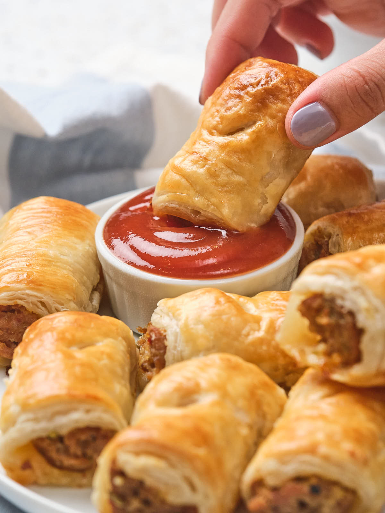

snack
Sausage Rolls
Homemade Sausage Rolls with Tomato Sauce
Golden puff pastry filled with a tasty mixture of beef mince, sausage meat, tomato sauce, BBQ sauce, and herbs.
What You'll Need
Ingredients
Sausage Roll Filling
- 1 sheet homemade puff pastry of 2 sheets bought rolled puff pastry, defrosted
- 300g mince
- 300g sausage meat
- 2 Tbsp tomato sauce
- 2 Tbsp BBQ sauce
- 1 tsp mixed herbs
- Salt and pepper
For Brushing on Top
- 1 egg
- Sesame seeds or poppy seeds
Time To Cook
Method
Prepare the Pastry
If using homemade puff pastry, split the pastry in half and roll each piece into a 30cm x 20cm rectangle.
If using bought pastry, use the two defrosted sheets.
Place the pastry sheets on a lightly greased baking tray and set aside while preparing the filling.
Make the Filling
In a medium-sized bowl, thoroughly mix together the mince, sausage meat, tomato sauce, BBQ sauce, mixed herbs, salt, and pepper.
Divide the mixture in half and place one half in a long line down the middle of each sheet of pastry.
Roll the Sausage Rolls
Whisk the egg in a small bowl.
Using a pastry brush, brush the egg along one of the long edges of each pastry sheet. This will help the pastry stick together when rolled.
Roll the long edge of the pastry without the egg over the mince mixture to create a long roll.
Place the rolls on a lightly greased baking tray with the joined seam facing down.
Brush the tops of the rolls with the remaining egg and sprinkle with sesame seeds or poppy seeds if desired.
Bake the Sausage Rolls
Cut each long roll into 8 to 10 pieces.
Bake at 200°C for 30 to 40 minutes, until the filling is cooked through and the pastry is golden brown and puffed up.
Remove from the oven and allow the sausage rolls to cool slightly before serving.
Source & Credits
Recipe & Image Credits
Recipe Source
The Kiwi Country Girl
This Sausage Rolls recipe was originally publish by The Kiwi Country Girl.
View Original RecipeImage Source
Quick Prep Recipes
The image on this page is sourced from Quick Prep Recipes.
View Image SourceRecipe creators and image sources are credited to acknowledge the original creators of the content used on this page.